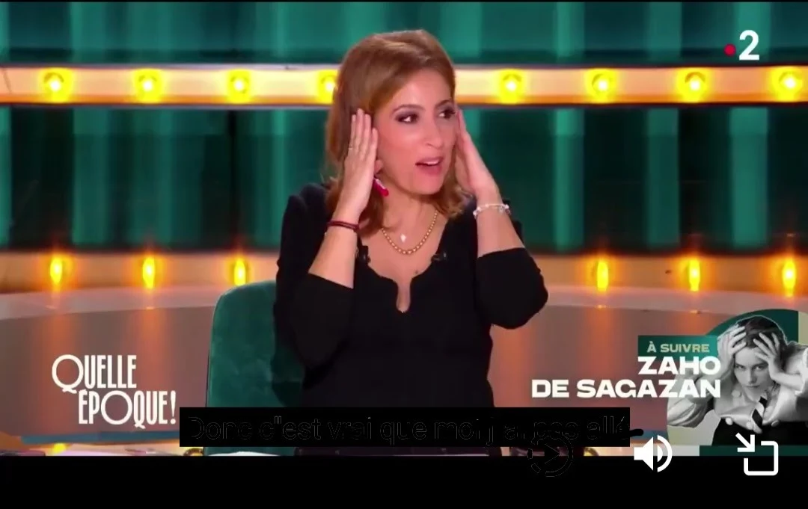

Publication d’archives
QUELLE ÉPOQUE ! Oui en effet.
Date indiquée par Facebook · 30 octobre 2024
Texte conservé avec la publication
Contexte du dossier
Le texte PCF daté du 14 octobre, publié le 16, alerte sur les économies prévues, les crédits gelés et l’incertitude après la suppression de la redevance. Il défend un financement pérenne et indépendant, discute la TVA comme moindre mal transitoire et la proposition de contribution progressive de Julia Cagé ; il combat fusion imposée, pertes d’emplois et emprise des milliardaires sur le privé, en demandant une autre régulation que la loi de 1986. Une référence aux Échos du 10 novembre dans ce texte daté d’octobre révèle une incohérence interne : sa version ou sa datation doivent rester réservées. Le 30 octobre, une autre publication critique les propos de Laurent Gerra sur France 2 contre féminisme et autres engagements, et la réaction de Léa Salamé. Elle réclame une exigence du service public jusque dans ses émissions.

Sources
Archive rouge · export Facebook · AR-0002-FB-01259
À lire aussi · 35ème nuit des Molières